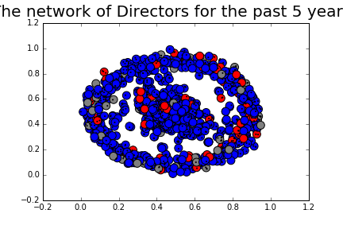
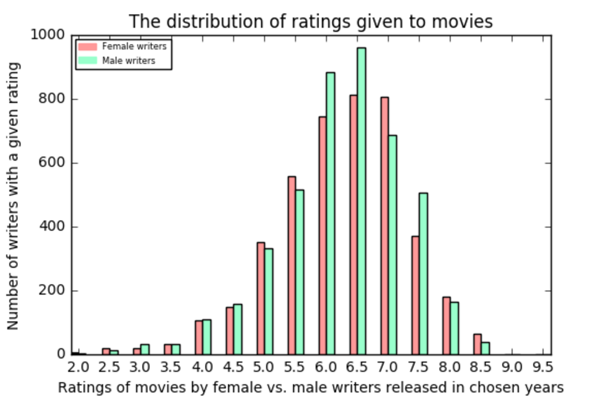

Network
In this section we will extract information from The Open Movie Database to get all the information needed to construct networks from movies released in the last 50 years
Actors Network
First, we'll construct a network of actors from movies released in recent 5 years. Each movie has listed 3-5 star actors that we will connect together in networkx multigraph, we will use multigraph since actors can act with each other not only once but multiple times. This is how the network for Actors in recent 5 years looks like:
Wquirement that a movie has a female writer is only that one of the writers of the movie is female, and most movies have more than one and more than two writers.
The appearance of women in films
Now, let's look at graphs for each year; how the directors, writers and stars of movies are distributed based on gender.
Directors ratio

In the graph above, we look at all movies with a female director vs. all movies with a male director. Some movies could have more than one director, and thus have two entries (male and female) in the graph. We see the same as in our percentage table before, movies from 1996 have the most female directors and 2015, but the distribution is very uneven for every single year.
Writers ratio

Let's consider that the preceding graph shows every movie that has a male writer, as well as every movie that has a female writer. The ratios are different than in our table, showing that there are many movies that contain both female and male writers.
Actors ratio

The ratio of the stars of movies is at least getting more positive in 2016.
The distribution of genres
Next, we'll look at which genres movies from both of the genders are likely to be. Let's consider that since women appear less often in every single aspect of the movies, we have multiplied the number of women accordingly, so the genders appear approximately as often.
Directors genres

We see that women are far more likely to direct dramas, biographies and comedies, but much less likely to take on the directing of action, adventure and horror. No women have directed any mysteries, sci-fis, thrillers, fantasies, music films and westerns in the years we look at.
Writers genres

We see the same pattern for writers. Females are more likely to write dramas and comedies, but less likely to write action movie scripts. No women had written music films.
Actors genres

We see the same pattern as before, except for now, it's much more likely that a woman stars in a horror film than a man. No woman had starred in a western.
The distribution of ratings
Finally, in this graphs section, we'll look at which ratings movies from both of the genders are likely to receive. Again, the number of women is multiplied in accordance with the appearance of men.
Directors ratings

Female directed films are more likely to receive a lower grade of 5.5-6.0 (and 8.0 by a small factor), but male directors generally receive higher grades (6.5-8.5).
Writers ratings
The ratings are better distributed for the writers.
Actors ratings

Male stars receive more of almost every grade, so the distribution must be pretty even, but the index of multiplication has been rounded in some uneven way.